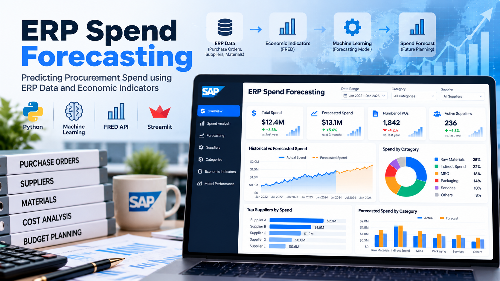
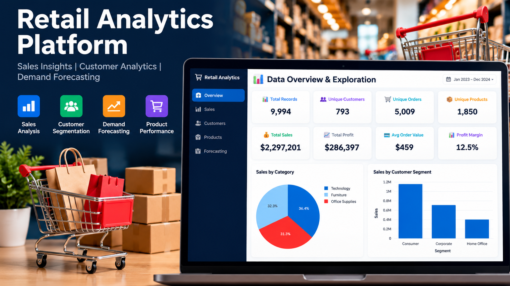
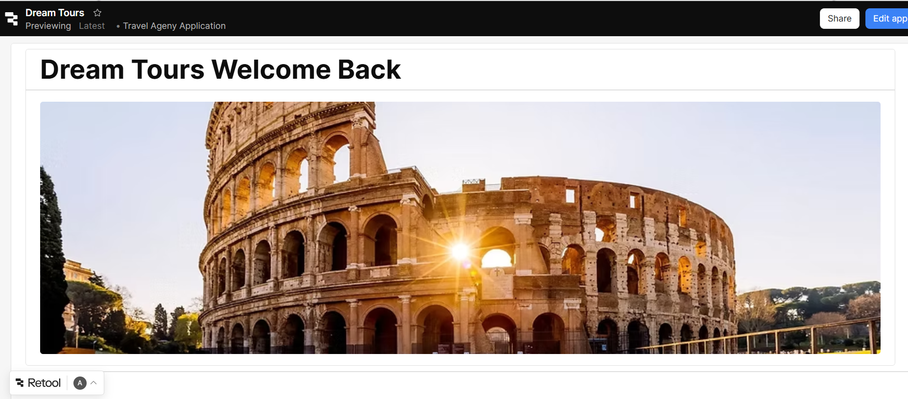

Business Analytics | FP&A | SAP S/4HANA | Data Analytics
Finance and business analytics professional combining FP&A and SAP S/4HANA experience with data analytics and machine learning to support data-driven business decisions.

Built a machine-learning forecasting pipeline that combines ERP procurement data with FRED economic indicators to estimate future spending and support procurement planning and financial decision-making.
LIVE PROJECT GITHUB
Built an interactive retail analytics platform using customer segmentation and market basket analysis to identify customer groups, purchasing patterns, and product relationships that support business decision-making.
LIVE PROJECT GITHUBAnalyzed NYC nighttime mobility using Yellow Taxi, rideshare, and Yelp nightlife data to compare pre-COVID, during-COVID, and post-COVID patterns and identify changes in travel behavior, nightlife hotspots, and nighttime recovery.
VIEW PROJECT
Developed a relational hotel reservation database as a collaborative project, using MySQL for database design and SQL operations, Mockaroo for test data, and Retool to build an interactive user interface.
PROJECT DETAILSMy professional background combines finance, FP&A, and SAP S/4HANA implementation, with experience in financial planning, forecasting, management reporting, KPI analysis, and ERP-driven business processes.
I am currently completing my Master of Science in Business Analytics at Baruch College, expanding my expertise in Python, R, SQL, machine learning, and data visualization to support data-driven business decision-making.